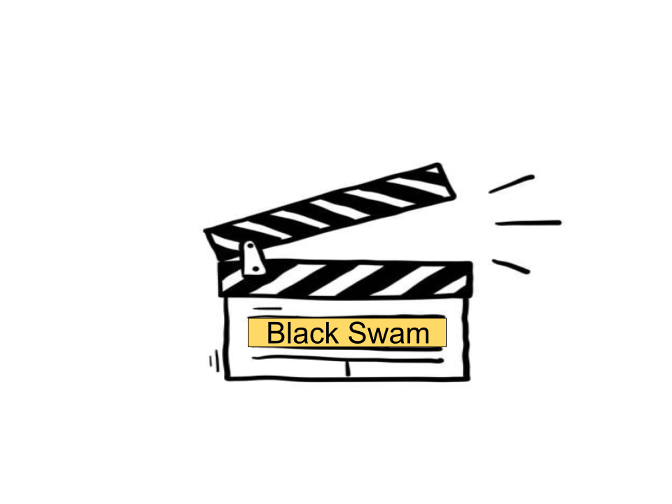
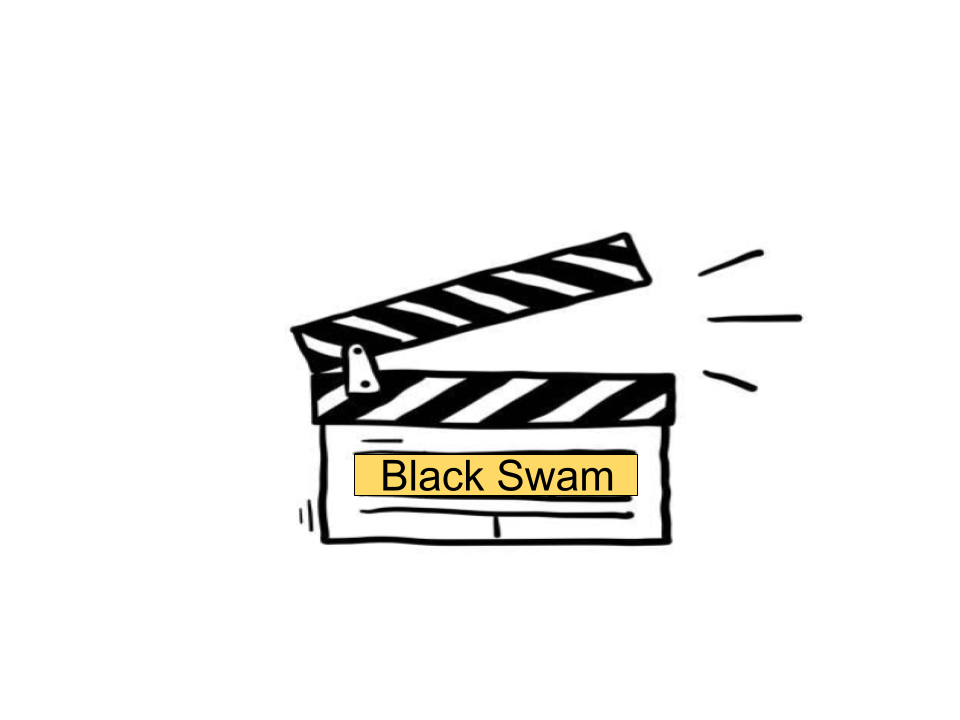

Description
Nina (Portman) is a ballerina in a New York City ballet company whose life, like all those in her profession, is completely consumed with dance. She lives with her obsessive former ballerina mother Erica (Hershey) who exerts a suffocating control over her. When artistic director Thomas Leroy (Cassel) decides to replace prima ballerina Beth MacIntyre (Ryder) for the opening production of their new season, Swan Lake, Nina is his first choice. But Nina has competition: a new dancer, Lily (Kunis), who impresses Leroy as well. Swan Lake requires a dancer who can play both the White Swan with innocence and grace, and the Black Swan, who represents guile and sensuality. Nina fits the White Swan role perfectly but Lily is the personification of the Black Swan. As the two young dancers expand their rivalry into a twisted friendship, Nina begins to get more in touch with her dark side - a recklessness that threatens to destroy her.
Movie Info
Genre: Mystery & Thriller, Drama
Original Language: English
Director: Darren Aronofsky
Producer: Mike Medavoy, Arnold Messer, Brian Oliver, Scott Franklin
Writer: Mark Heyman, Andres Heinz
Release Date (Theaters): Dec 17, 2010 Wide
Release Date (Streaming): Nov 25, 2015
Box Office (Gross USA): $107.0M
Runtime: 1h 48m
Production Co: Dune, Protozoa Pictures, Cross Creek Pictures, Phoenix Pictures
Sound Mix: SDDS, Dolby Digital, DTS.